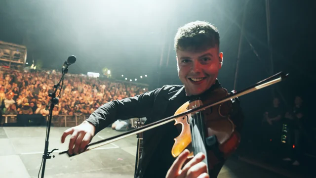
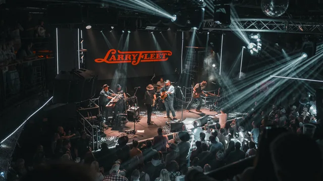
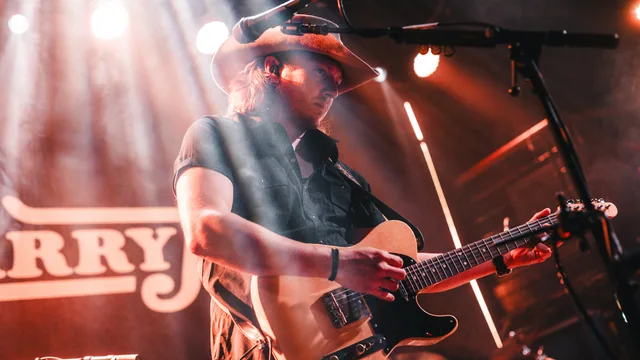
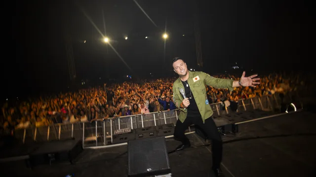
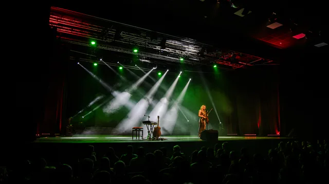
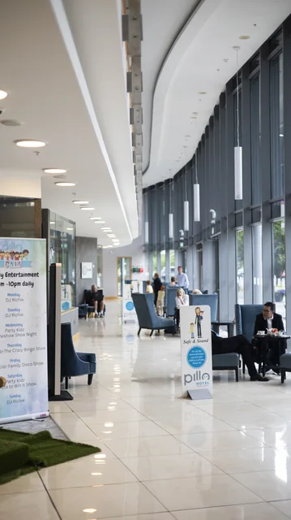
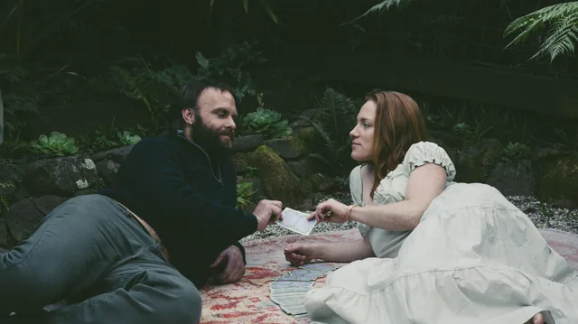
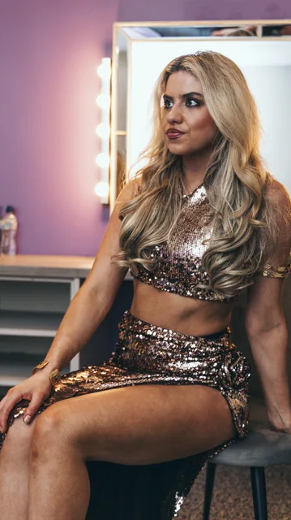

More than
a moving image.
People, places and moments worth keeping. Explore food and drink, live events, portraits and commercial photography.
Plan your shoot ↗42 photographs · All work

Portobello cocktails

Cocktail details

K Sixty Seven

Tara Hotel

Pierce O’Leary


Féile 2025

Wiki Woo

Portrait session

Portrait session

Residential interiors

McLaren on the runway

John O’Dwyers

The Rusty Mackerel

The Hops Bar

The Hops Bar

K Sixty Seven brunch

K Sixty Seven cocktails

Le Grá in Ibiza

Pierce O’Leary · Training camp

Pierce O’Leary · Before the bell

Pierce O’Leary · Preparation

Pierce O’Leary · Pad work

Pierce O’Leary · Dublin


Larry Fleet · Live


Larry Fleet · On stage

Nathan Carter · Farmers Bash


Nathan Carter · The crowd


Zara Martin · Live

Zara Martin · In the spotlight

Residential exteriors

Outdoor living

Howth interiors


Pillo Hotel

Portrait session


Portraits outdoors


Zara Martin · Backstage

Musician portraits

Lamborghini · Woodland

Lamborghini · Colour and detail

Ferrari · Woodland

Pierce O’Leary · Vehicle handover

Mercedes-AMG · Airfield
Photography for your next projectLet’s put you
Let’s put you
in the picture.
Tell me about your brand, venue or event and the images you need.
Get in touch